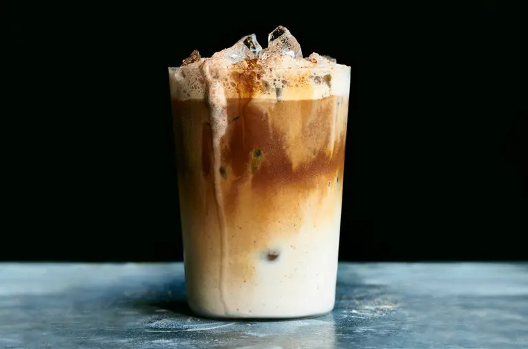

Home
Dirty Horchata

Description
Horchata, a sweet cinnamon drink popular throughout Latin America, is typically made by soaking white rice in water, straining through a fine-mesh sieve to eliminate solids, if desired, then
sweetening the liquid with sugar and cinnamon.
Ingredients
- 2 cups uncooked long-grain white rice
- 1 (14-ounce) can sweetened condensed milk
- 1 tablespoon ground nutmeg
- 1 tablespoon ground cinnamon
- 1/2 gallon whole milk
- 2 cups cold brew concentrate or espresso, for serving
Steps
- Add the rice and 21/2 cups water to a large container and cover. Soak at room temperature for a minimum of 8 hours.
-
Pour the rice and soaking liquid into a blender, and blend until all the rice is finely ground, 2 to 3 minutes. Add condensed milk, nutmeg and cinnamon; blend until combined. Pour the mixture
into a large pitcher or bowl. Add the whole milk and whisk until incorporated.
- To serve, divide horchata among ice-filled glasses and top with cold brew concentrate, to taste (about 2 to 3 tablespoons cold brew for each cup of horchata).